Finance Me
Project Overview
FinanceMe is a Global leading Banking and Financial services provider based out of Germany. The company offers products and services like Banking, Funds Management, Loans, Debit Cards and Credits Cards, Investment Banking etc. Initially the company was using a Monolithic application architecture, As the company grown, It started facing difficulties in managing the application infrastructure and application deployments and Scaling of application when the traffic load increases.
FinanceMe has decided to opt for microservice architecture for its applications and decided to go DevOps by implementing necessary automations using CICD. FinanceMe has decided to use AWS as primary cloud services provider to create servers, databases and application deployments.
The company’s goal is to deliver the product updates frequently to production automatically with High quality & Reliability. They also want to accelerate software delivery speed, quality and reducing feedback time between developers and testers.
Technologies Used
- Git - For version control for tracking changes in the code files
- Maven – For Continuous Build
- Jenkins - For continuous integration and continuous deployment
- Docker - For deploying containerized applications
- Ansible - Configuration management tools
- Terraform - For creation of infrastructure.
- Prometheus and Grafana – For Automated Monitoring and Report Visualization
My Role
As soon as the developer pushes the updated code on the GIT master branch, the code should be checked out, compiled, tested, packaged and containerized. A new test-server should be provisioned using terraform and should be automatically configured using Ansible with all the required software’s and as soon as the server is available, the application must be deployed to the test-server automatically. The deployment should then be tested using a test automation tool, and if the build is Successful, Prod server must be configured with all the software it should be pushed to the prod server. All this should happen automatically and should be triggered from a push to the GitHub master branch. Continuous monitoring server must be configured to monitor the test as well as prod server using Prometheus and Grafana should be configured to display a dashboard with following metrics.
- CPU utilization
- Disk Space Utilization
- Total Available Memory
Create an EC2 instance with below properties
AMI: Ubuntu Server 22.04 LTS (HVM), SSD Volume Type
Storage: 15 GB gp2
Security group: allow all traffic
Connect the server through MobaXterm
Update all packages and install jdk
sudo apt update
sudo apt install maven
sudo apt install docker.io -y
sudo apt install openjdk-17-jre -y

Install Terraform
Navigate to the website to get installation setup.
Create a shell script and run the script as shown below.
Install Ansible
Navigate to the website to get installation setup.
Create a shell script and run the script as shown below.
Install Jenkins
Navigate to the website to get installation setup.
Create a shell script and run the script as shown below.
Provide root privilages to Jenkins user using below command
# visudo
Add Jenkins user in docker group using below command
$ usermof -aG docker jenkins
Open Jenkins UI
http://<pub_IP>: 8080/
Fill the necessary details.
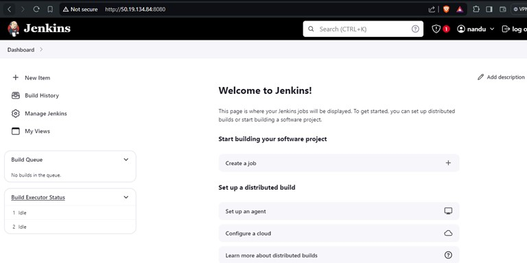For terraform create new role in AWS. Give AmazoneEC2FullAccess.
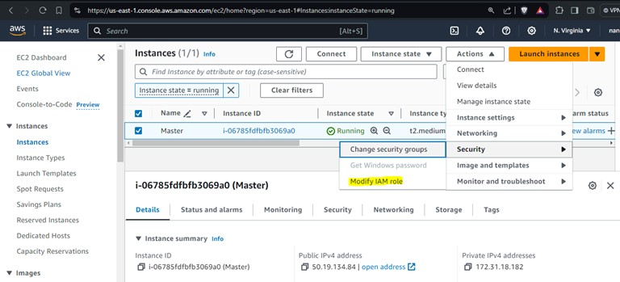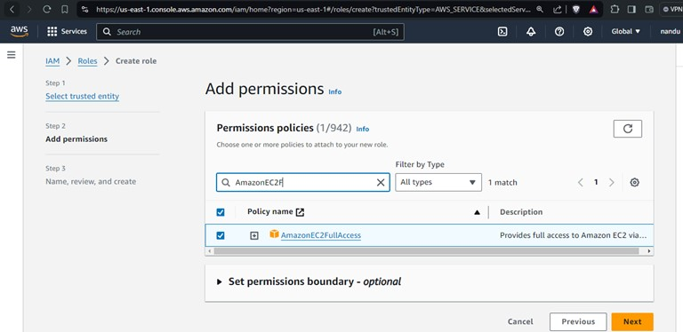
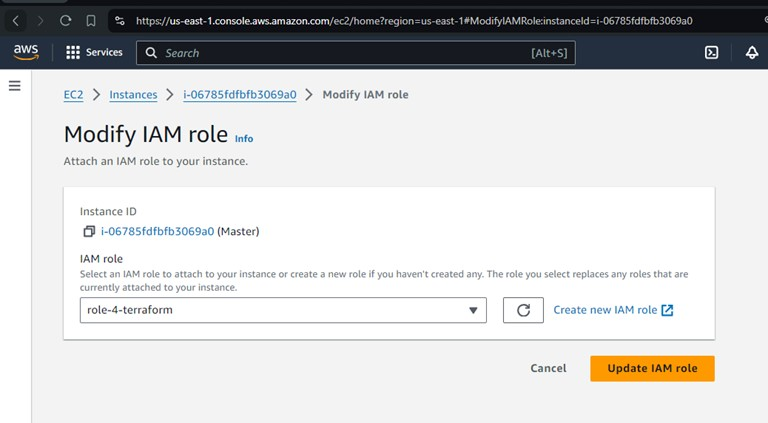
Restart the jenkins
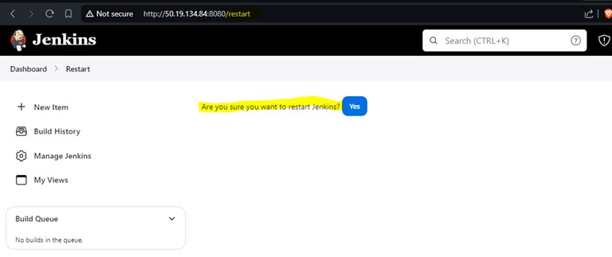Fork the project file from projects repository to personal GitHub repositoryConfigure Jenkins-Github Trigger
Configure Jenkins-Github Trigger
Configure the GitHub trigger by create the webhook in GitHub repository setting
Create a pipeline in Jenkins
Click on “GitHub hook trigger for GITScm polling” option to configure the webhook
Setup Docker credential for docker login
Go to account settings => Security => Click on new access tocken
Click on the Snipper Generator at the bottom of Job configuration and select the “withCredential:bind credential to variable” option.
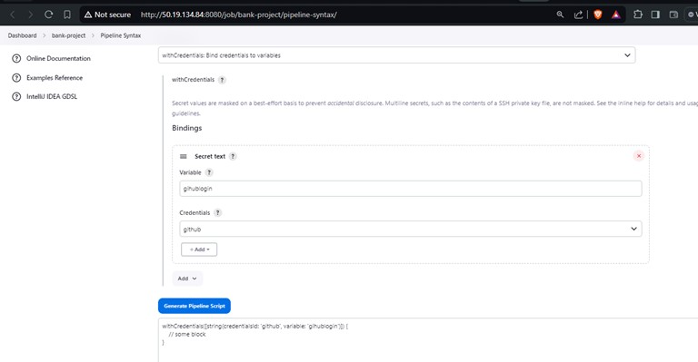Fill the Docker Hub credential in Jenkins as shown below and then generate the pipeline script.
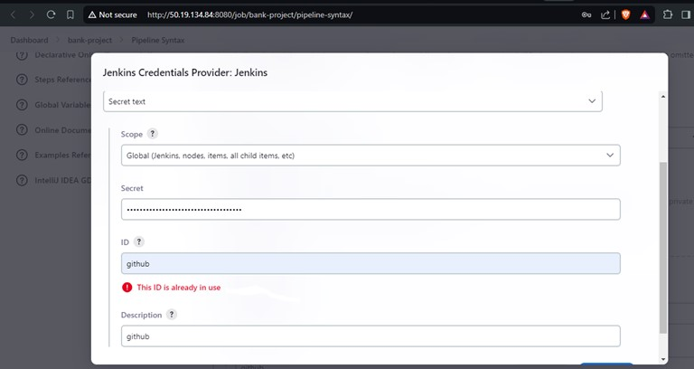Use the below Scripted pipeline which include the following stages
Fetch Code => Maven Build => Build docker image => Login to Docker Hub
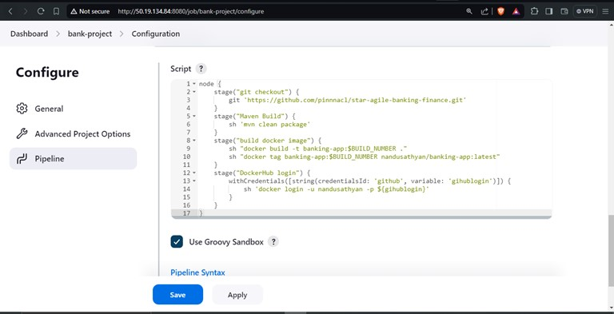
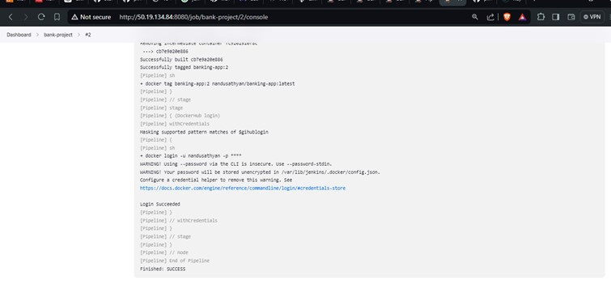
Now push the docker image to docker hub by using below stage in pipeline
stage('Docker push') {
sh 'docker push nandusathyan/banking-app:latest'
}
Create terraform.tf file to create the EC2 instance automatically when the source code is build and tested successfully. We will do the below steps once at time
sh ‘terraform plan'
sh ‘terraform validate’
sh ‘terraform apply –auto-approve'
Console output after applying terraform:
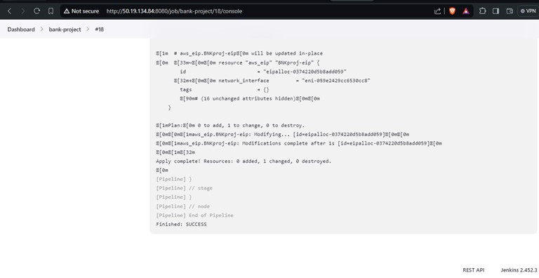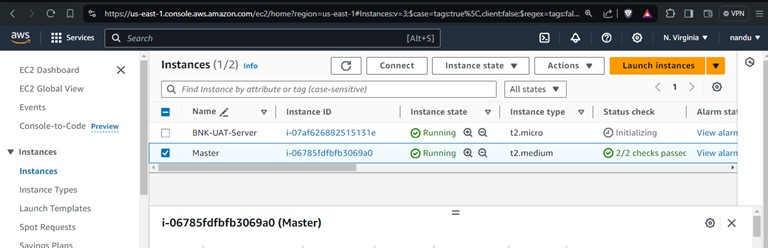
Configure ansible with Jenkins to deploy the application along with supporting software on UAT
install "ansible" plugin in Jenkins
Configure environment variables
=> global tools => ansible => install automatically
Click on Snippet generator select AnsiblePlaybook: Invoke an ansible playbook
Add ssh credentials, copy paste the private_key of ubuntu user and then generate the pipeline script
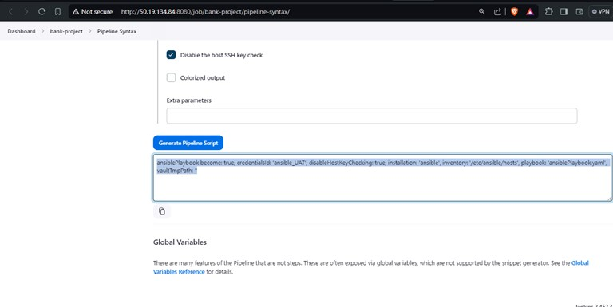Create ansible playbook yaml file to update package => install docker => start docker => run the application container
Hence the application image will get pulled from docker hub and application container will get deployed in UAT
configure the UAT public IP in ansible inventory(/etc/ansible/hosts) or create an inventory file.
[UAT]
BMK-UAR-Server ansible_ssh_host=44.223.204.211 ansible_ssh_user=ubuntu
Now run the pipeline script by clicking on Build in Jenkins. The output is as shown below.
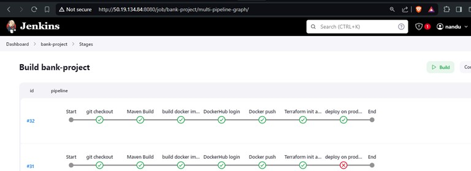
Access the GUI using below URL
https://IP:8084/

Continuous monitoring – Install Prometheus
launch a VM with t2.micro
Update the packages using sudo yum update command
install Prometheus using the link
goto the prometheus downloads page => right click and copy link address => download the file using wget command
untar the file using tar -xvzf file_name command
Configure the below Prometheus service file:
sudo vi /etc/systemd/system/prometheus.service
start the Prometheus using below commands
sudo systemctl daemon-reload
sudo systemctl daemon-reload
sudo systemctl start Prometheus

Configure Node Exporters:
Goto the server you wish to monitor which is “master” and “BNK-UAT-Server” server. Download the file using wget commad
Create Node Export service file as shown below.

Use below commad to start node exporter in both “master” and “BNK-UAT-Server”
sudo systemctl daemon-reload
sudo systemctl status node_exporter
sudo systemctl start node_exporter
copy the private IP Address of the server you wish to monitor using below commad
hostname -i
Goto to Prometheus Server ::
### installation path
cd /root/prometheus-2.38.0.linux-amd64
vi prometheus.yml
## Add the target with valid node_exporter port as mentioned below:
- targets: ["172.31.8.252:9100"] # Take the private IP Address of Target_Node.
restart the Prometheus using below command
sudo systemctl restart prometheus
sudo systemctl status Prometheus
Navigate to Prometheus GUI: http://pub_IP:9090/
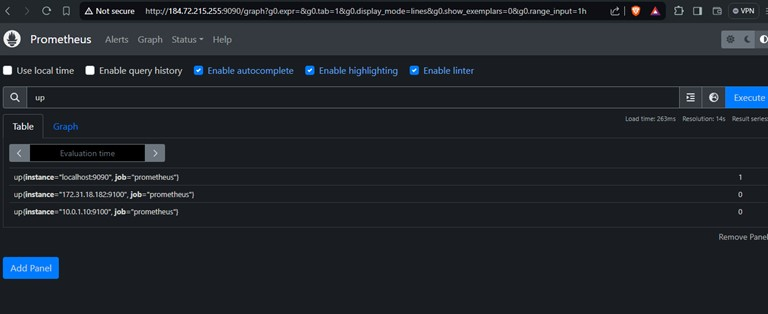
install Grafana in the same Prometheus server
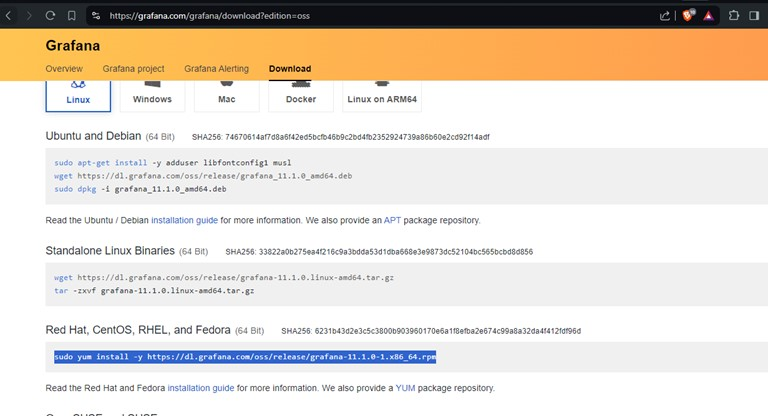Start the Grafana service using below command
sudo /bin/systemctl enable grafana-server.service
sudo /bin/systemctl start grafana-server.service
sudo /bin/systemctl status grafana-server.service
Navigate to Grafana GUI: http://pub_IP:3000
Configure Prometheus in Grafana by clicking on data source, add the URL of prometheus, Click on Save. Now Create the Dashboard by navigating to dashboard
Click on code and add the PromQL as shown below
1. CPU utilization
sum by(mode)(irate(node_cpu_seconds_total{mode!="idle"}[5m])) > 0
2. Disk Space Utilization
100 - (node_filesystem_avail_bytes{fstype!="tmpfs",fstype!="overlay"} * 100 / node_filesystem_size_bytes{fstype!="tmpfs",fstype!="overlay"})
3. Total Available Memory in percentage
(node_memory_MemAvailable_bytes * 100) / node_memory_MemTotal_bytes
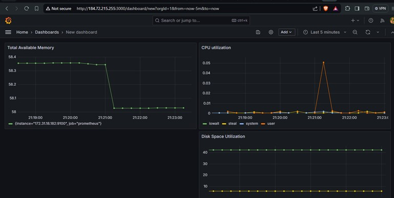